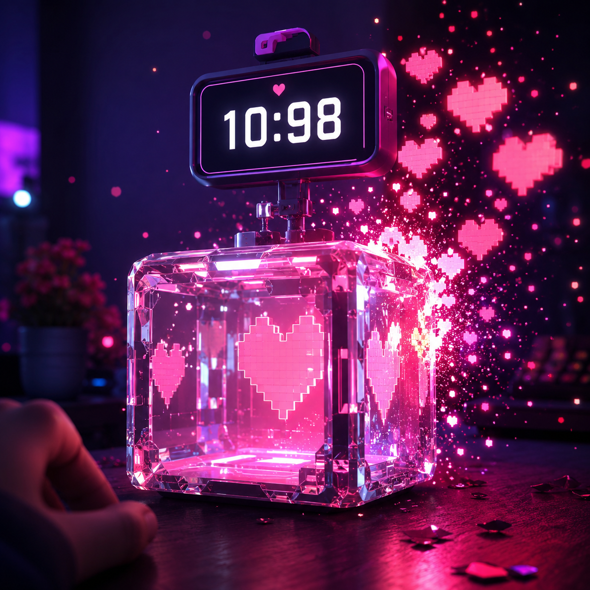

BlockRespawner Set how long a block takes to respawn, choose exactly what it drops when broken, customize the sound played when it respawns, and much more.

Tired of boring, static block respawn mechanics? BlockRespawner revolutionizes the way blocks regenerate, with custom sounds, particles, broadcasts, drops, and more!, Whether you're creating custom mines, resource generators, or unique gameplay mechanics, the possibilities are endless! Perfect for PvP arenas, RPG worlds, BOXPVP , custom loot systems, and minigames.